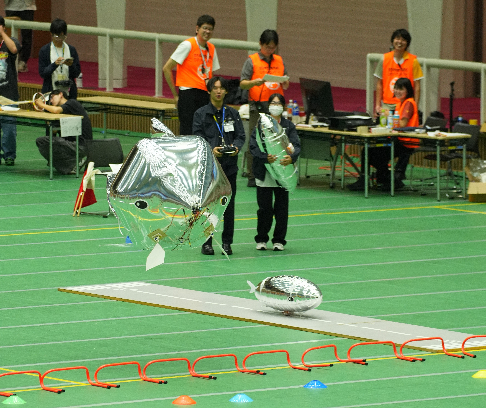
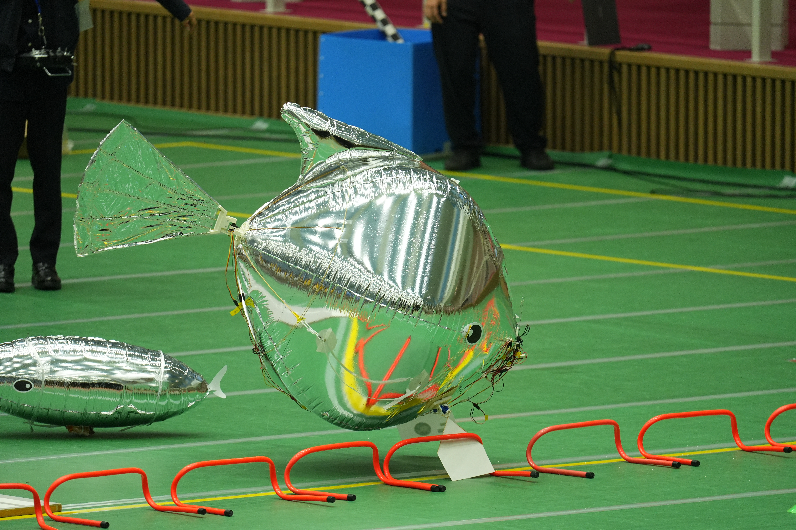
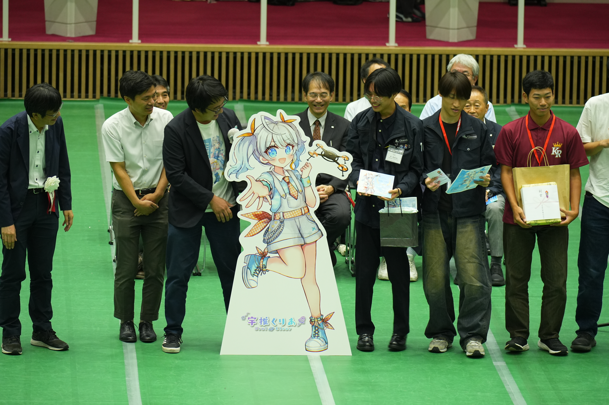
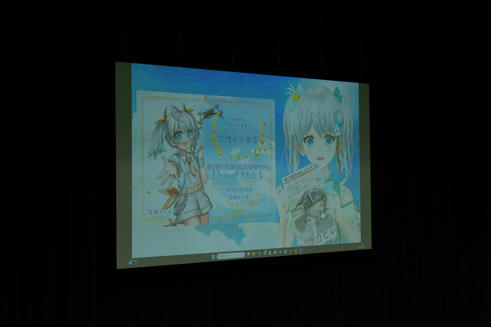

参加レポート～2026年度飛行ロボットコンテスト～
2026年度「全日本学生屋内飛行ロボットコンテスト」に、チーム名「Flying！フカヒレ」として統合部門に出場いたしました。
本番のフライトでは、バッテリートラブルにより思うように飛行することができませんでしたが、トラブルを抱えながらも制御を保ち、Uターン飛行を成功させることができました。
改めまして、大会運営に携わった方々、応援して下さったすべての方々へお礼申し上げます。
飛行結果
飛行競技結果は以下の通りです。
メインミッション：失敗
総得点：200点
帰還：成功 ←本当に？？？
順位：16位/47チーム
ベスプレ賞・宇推くりあ賞 受賞
昨年度に続き2年連続でベストプレゼンテーション賞・宇推くりあ賞を受賞いたしました。
表彰式では、ロケットアイドルVtuber宇推くりあさんから生アテレコ付きビデオメッセージにて表彰いただき、1視聴者として大変幸せな体験をさせていただくことができました！
今後の大会では、より多くのチームに宇推くりあ賞が行き渡ることを願っております。
今後について
現在のフカヒレチームは、所属する4名全員が高専5年生で、来年3月卒業見込みであるため、飛行ロボコン出場は本年で引退となります。
これまでの大会出場を通して、チームメンバーはもちろん、応援してくださった皆様からも多くのことを学ばせていただきました。
これまでのご支援に心より感謝申し上げます。
今後は、卒業研究としてフカヒレのさらなる性能向上を目指し、今年度いっぱい研究開発活動を継続してまいります。進捗については、引き続き当サイトにてご報告させていただきますので、今後ともよろしくお願いいたします。
LIVE配信アーカイブ
大会当日のLIVE配信アーカイブはNVSさまのYoutubeよりご視聴いただけます。
以下のURLよりご確認ください。
Gallery
大会当日の様子を撮影した写真を掲載いたします。
なお、写真は雪夜彗星（@sncomet）様よりご提供いただきました。ありがとうございました。



